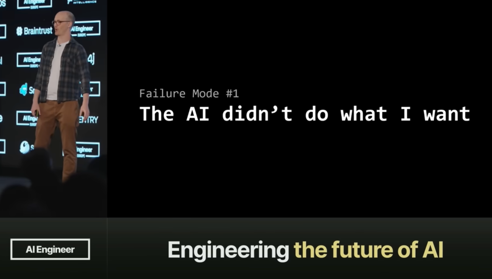
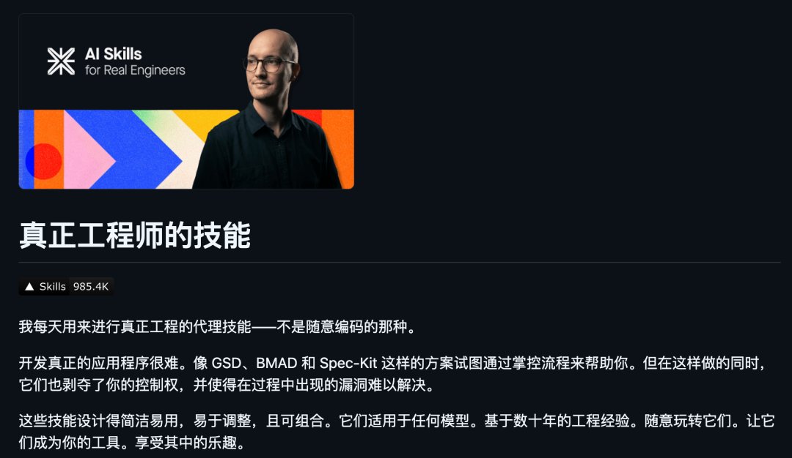
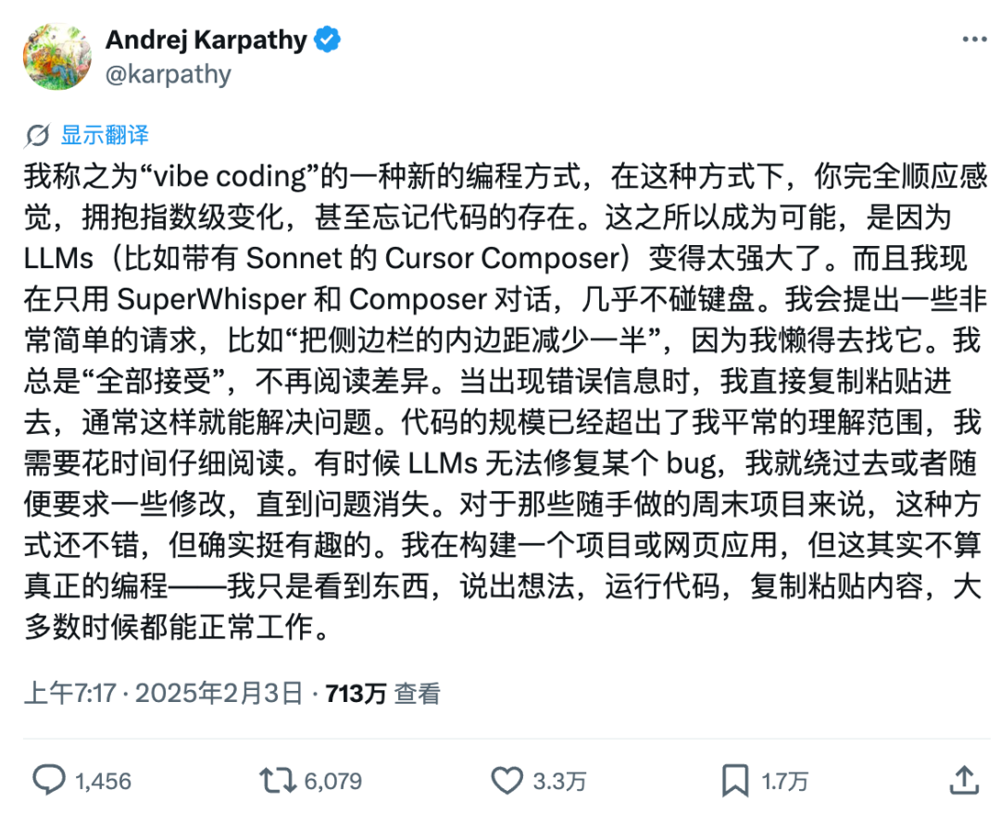
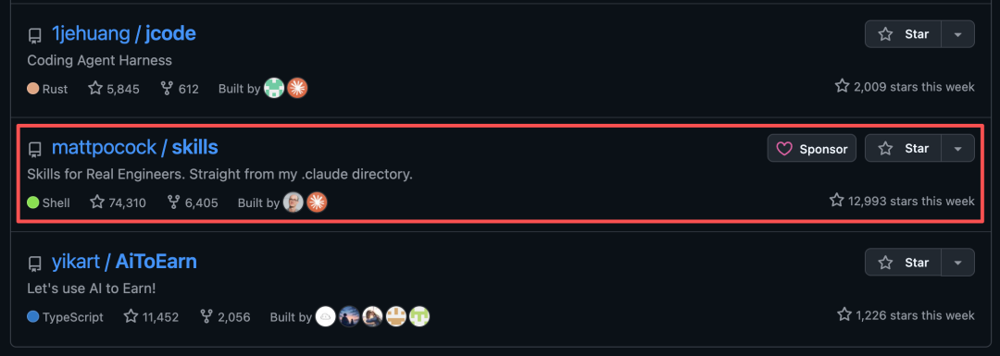
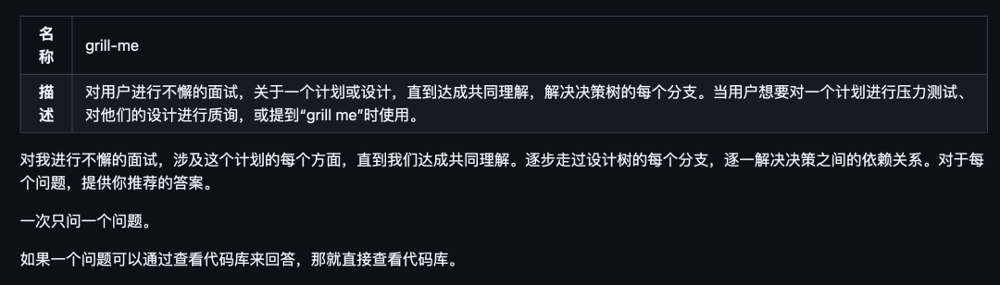
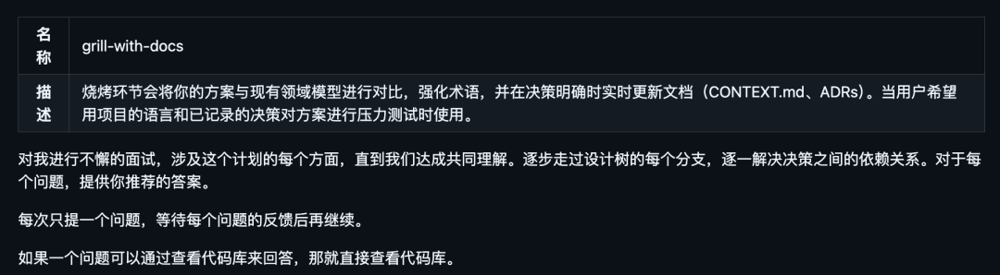
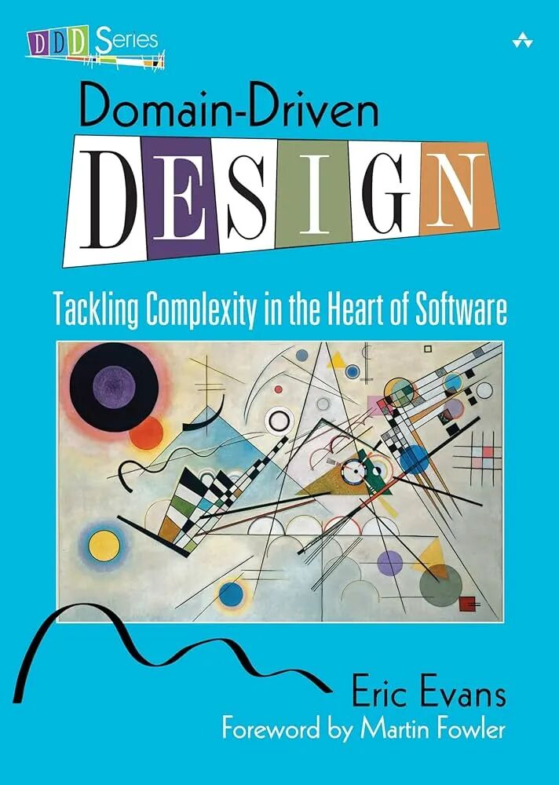
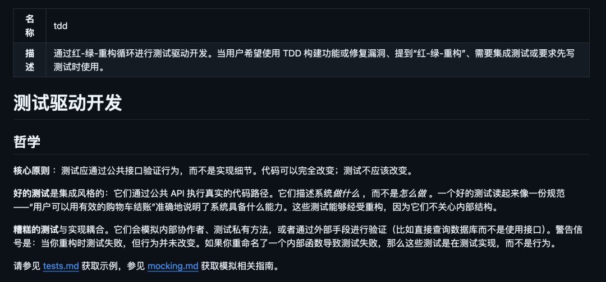
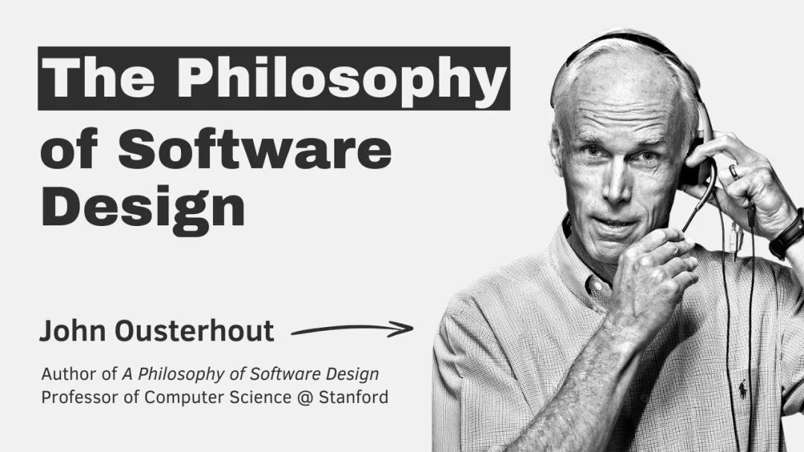

视频：https://www.youtube.com/watch?v=v4F1gFy-hqgAI 让写代码变快了，但代码从来没变得更便宜。
这是 Matt Pocock 在大会上演讲的核心观点。
他是前 Vercel 开发者布道师，Total TypeScript 作者，现在搞了一个叫 AI Hero 的平台，专门教人用 AI Coding。
这场演讲发布两周就 60 万播放量，18 分钟，信息密度极高。
他教了 18 个月的 AI Coding 之后，发现了一个规律：那些用 AI 用得好的开发者，不是什么都委托给 AI 的人，也不是什么都自己写的人。
是那些回归工程基础的人。
他还基于自己的 AI Coding 经验搞了几个 Skill，目前开源了。

01
AI Coding 的两个极端都有问题
现在行业里对 AI Coding 有两种极端态度。
一种是 vibe coding。
这个词是 Andrej Karpathy 提出来的，说白了就是凭感觉让 AI 写代码，描述个大概，然后祈祷它能跑。

另一种是 specs-to-code。
写一份详细的规格说明书，直接扔给 AI 让它生成。这派的假设是：代码是廉价的，规格才是珍贵的。
Matt 说这两个都有问题。
vibe coding 的问题很明显：失控。你不知道 AI 写了什么，也不知道它为什么这么写，改起来更是灾难。
但 specs-to-code 的问题更隐蔽。
它假设代码是廉价的，但实际上，AI 生成的代码和人类写的代码一样，都会腐烂、都会积累技术债、都需要维护。
代码从来就不廉价。AI 只是让你更快地产出代码，但不会替你思考代码该怎么组织。
Matt 的观察是：真正成功的开发者，既不全委托也不全自己写。他们把 AI 当作一个超级实习生--执行力强，但需要你给出清晰的方向和约束。
怎么给出清晰的方向？接下来就是他的四个方法论。
02
先别写代码，先被 AI 拷问一轮
Grill Me 是 Matt 开源的一个 Claude Code Skill。
也就是前段时间一直挂在 GitHub 开源热榜的那个 Skill 里面的。

它的逻辑特别简单：在动手写任何代码之前，让 AI 先把你拷问一轮。
不是你问 AI，是 AI 问你。
它会沿着你设计决策树的每一个分支往下走，一条一条地把模糊的想法逼成清晰的方案。
依赖关系、边界条件、数据模型，全都不放过。

Matt 说他每天收到大约 5 条消息，都是开发者说用了 Grill Me 之后大开眼界的。
Reddit 上也有人专门发帖说这个 Skill 彻底改变了他用 AI 做规划的方式。
后来 Matt 又进化出了一个升级版，叫 /grill-with-docs。
不仅拷问你，还会把拷问过程中达成的共识实时写进一个叫 CONTEXT.md 的文件里。

如果你要问和 SuperPowers 的 Brainstorming 有啥区别，我用起来的感受是：
Brainstorming：适合任何新功能、新项目、重构启动前的设计阶段。
Grill-with-docs：更适合已有代码库的项目，你需要对一个具体方案做决策、对齐术语、并同步建立文档。
如果你的项目还没有 CONTEXT.md 体系，它也会帮你从头建起来。
这么做的好处是什么？
传统开发中，你脑子里对系统的理解和代码之间总有 gap。
有了这个文件，AI 在后续所有开发中都有一份共识词典可以参考，不用每次都重新解释一遍。
说白了，Grill Me 强迫你在写代码之前先把设计想清楚。
AI 不会帮你做决策，它只会加速你已经做出的决策。如果你自己都没想清楚，AI 加速的只是混乱。
03
统一语言
让人、代码和 AI 说同一种话
Ubiquitous Language 这个概念来自 Eric Evans 2003 年出版的经典《领域驱动设计》。
核心思想是：让代码、开发者和领域专家都说同一套术语。

听起来理所当然，但实际操作中很少有团队做到。产品经理说一个词，开发者理解成另一个意思，代码里的命名又是第三个东西。
在 AI 时代，这个问题被放大了。
因为 AI 没有隐含上下文，它不懂你的暗示和惯例。
你说的用户和代码里的 User 是不是一个东西？你说的订单和数据库里的 Order 是不是同一个概念？
如果你不说清楚，AI 就会自己猜。猜错了，你就得返工。
Matt 的做法是在项目根目录维护一个 CONTEXT.md 文件，里面记录所有核心术语的精确定义和它们之间的关系。
举一个他自己的真实例子。
他在开发课程管理系统时，新功能要加一个 Pitch 的概念（类似视频的包装方案）。
AI 当场发现了一个术语矛盾：他已经定义了 Standalone Video 是 lessonId 为 NULL 的视频，但新功能里又让视频关联到 Pitch。
那这种视频还算 Standalone Video 吗？
这个问题如果不解决，后续所有的变量命名、文件命名、数据库设计都会乱。
AI 给了两个方案：要么重新定义 Standalone Video，要么把 Pitch 看作附加在 Standalone Video 上的独立元数据。最终 Matt 选择了后者。
这个决定会影响整个代码库的命名和组织方式。如果不在一开始就统一清楚，后面越写越乱。
有了统一语言，AI 的输出质量会显著提升。它不再需要冗长地重新解释每个概念，几个词就能精准表达意图。Token 省了，对齐也好了。
Martin Fowler 也在他的博客里专门写过：统一语言的最大价值不是文档，而是它迫使你在沟通中消除歧义。在 AI 时代，这个价值被放大了十倍。
04
TDD：不是写测试，是控制节奏
TDD 很多人觉得是先写测试再写代码，但 Matt 强调的 TDD 不是这个意思。
在 AI Coding 语境下，TDD 的核心作用是控制每一步的粒度。

AI 最大的问题是什么？它太能写了。你让它做一个功能，它能一口气给你生成几百行代码，涵盖各种边界情况。
但这几百行代码你能验证吗？你知道哪行有问题吗？
TDD 强制你把工作切成小片。Red 先写个失败的测试，然后 Green 写最少的代码让测试通过，最后 Refactor 重构。每一步都是可验证的。
Matt 的观点是：没有 TDD，AI 生成的代码会迅速变成意大利面条。
因为 AI 没有全局观，它只会根据当前上下文尽力而为。如果你不控制每一步的范围，它就会越写越散。
传统开发中，TDD 的角色更多是质量保障。但在 AI Coding 中，TDD 的角色变成了过程控制—确保每一步都在可控范围内。
小步快跑，每一步都有反馈，发现偏差立刻修正。
05
Deep Modules：藏复杂，露简单
Deep Modules 这个概念来自斯坦福教授 John Ousterhout 的《软件设计的哲学》。

Deep Modules 就是功能丰富但接口简单的模块。
反面是功能不多但接口很复杂。
一个典型的 Deep Modules：JavaScript 的垃圾回收器。功能极其复杂，但对外暴露的接口就一个——你不用手动管理内存。
一个典型的反面就是：一个只做参数校验却要求传入 10 个配置项的函数。
Matt 说在 AI Coding 中，Deep Modules 的价值被放大了。
因为 AI 的上下文窗口有限，它能同时理解的代码范围是受限的。如果你的模块又浅又碎，AI 就需要在多个文件之间跳来跳去，很容易丢失上下文。
而 Deep Modules 把复杂性藏在背后，只暴露一个简单的接口。AI 只需要理解接口，不需要理解内部实现，认知负担大幅降低。
这也对测试友好。Deep Modules 测试起来更容易，因为你要覆盖的接口面更小。
这和很多人追求的小而美的模块化思路其实是反的。不是越小越好，而是封装得当才好。
06
底层逻辑：管理认知负荷
如果你仔细看这四个方法论，会发现它们有一个共同的底层逻辑：管理认知负荷。
Grill Me 让你在写代码前先想清楚，减少返工带来的认知消耗。
统一语言让人、代码和 AI 使用同一套术语，消除歧义带来的认知负担。
TDD 控制每一步的范围，避免一次处理太多信息。
Deep Modules 把复杂性封装起来，让每次交互只需要理解接口而不是全部细节。
Matt 的核心洞察是：在 AI 时代，开发者的角色从写代码的人变成了做战略设计的人。
AI 是你的战术执行者，它写代码、跑测试、做重构。但战略层面的决策——怎么组织模块、怎么定义概念、怎么切分任务——这些必须由人来定。
07
都不是新东西
而这四个方法论，都不是什么新发明。
统一语言来自 2003 年出版的《领域驱动设计》。
TDD 来自 Kent Beck 在 1999 年提出的极限编程。
Deep Modules 来自 2018 年出版的《软件设计的哲学》。
它们没有过时，也没有失效。在 AI 时代，它们反而变得更重要了。
因为当你有一个能一秒钟写 100 行代码的助手时，你需要的不是更多的代码，而是更好的约束。
Matt 在演讲最后说了一句话，大意是：这些原则几十年前就有了，它们没有被打败——它们变得更重要了。
08
怎么开始
别急着学新框架新工具，回去重读两本经典。
一本是 Eric Evans 的《领域驱动设计》，一本是 John Ousterhout 的《软件设计的哲学》。
然后试一下 Matt 开源的 Skills 仓库，里面有 Grill Me 和其他实战 Skill，可以直接装到 Claude Code 里用。
开源地址：https://github.com/mattpocock/skills如果你觉得 18 分钟的演讲还不过瘾，Matt 还录了一个近 1.5 小时的完整工作流视频，手把手演示了怎么用这套方法论从零搭建一个真实项目。
在 YouTube 搜 Full Walkthrough: Workflow for AI Coding — Matt Pocock 就能找到。
09
点击下方卡片，关注逛逛 GitHub
这个公众号历史发布过很多有趣的开源项目，如果你懒得翻文章一个个找，你直接关注微信公众号：逛逛 GitHub ，后台对话聊天就行了：